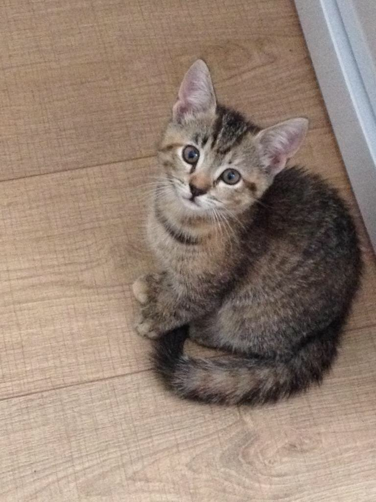
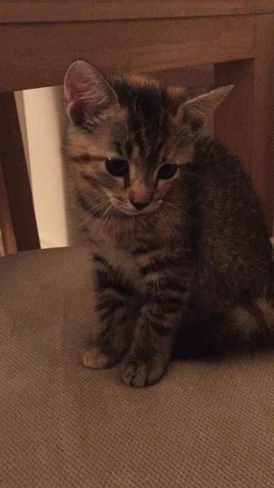

Katten zijn een van de oudste huisdieren. Een mannelijke kat noem je een kater terwijl je een vrouwlijke kat een poes noemt. Jonge katten worden kittens genoemd. Op een leeftijd van tien jaar wordt een kat bejaard en ze sterven ongeveer na veertien tot zestien jaar. Katten zijn carnivoren, dit betekent dat ze vleeseters zijn. Om zichzelf te wassen gebruiken ze hun tong die bedekt is met ruwe papillen. Een kat kan heel goed in het donker zien. Katten kunnen ook uitstekend horen en kunnen hun oren draaien, waardoor ze geluiden beter kunnen vinden. Katten zijn vooral 's nachts actief en in de dag rusten ze uit door te slapen. Ze spelen door te jagen, want dat is wat ze in de natuur doen.
We hebben Sally gehaald als een vriend voor Senegal na dat Ofelia is overleden. Ze was toen heel klein en schattig. Toen we haar kregen kon ze helemaal niet miauwen, maar we dachten dat ze het zichzelf aan zou leren. Dat is niet gebeurd en nog steeds in plaats van miauwen piept ze. Sally lijkt heel erg op Senegal en soms haal ik ze door elkaar. Elke keer als ik uit mijn kamer kom rent Sally naar mij toe om te knuffelen. Ik heb haar ook aangeleerd om op mijn schouders te springen wanneer je haar oppakt. Sally is niet alleen maar lief, want ze maakt ook veel dingen kapot. Ze heeft zo bijvoorbeeld een hele oude spiegel omgegooid.